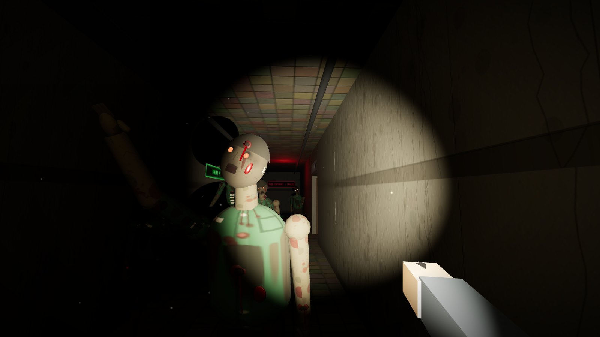
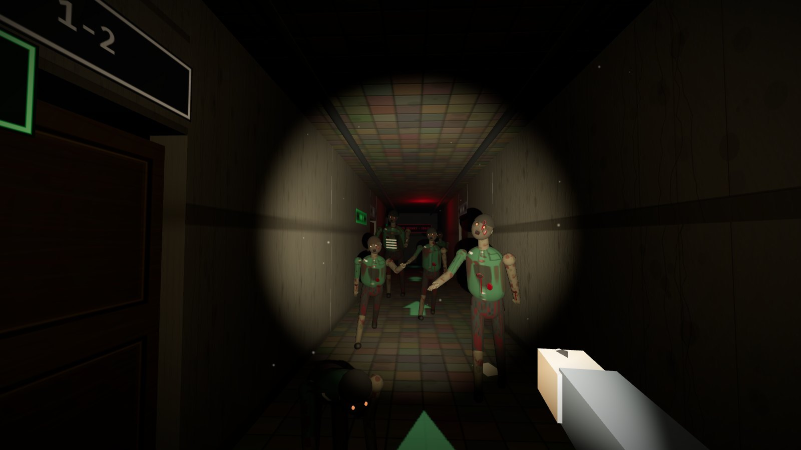
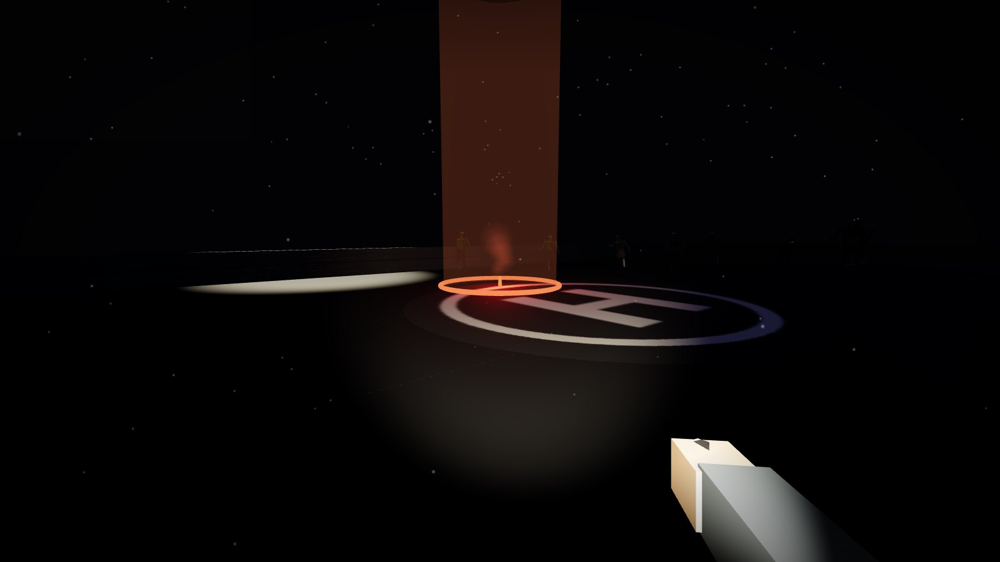
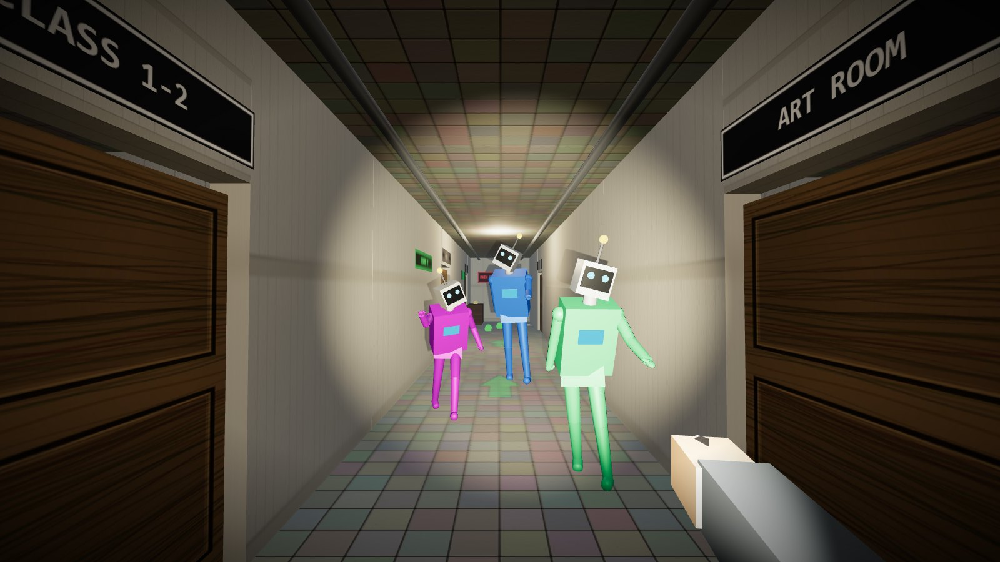

Your choices change the ending
At key moments the game stops asking what you can do and asks what you will do — on a timer. Different decisions lead to different consequences and endings.
bryan273.github.io/rooftop-escape
Seowon High School · 23:47
Six floors. One helicopter. Midnight.
A first-person zombie survival escape game that runs in your browser. Climb a locked-down school, solve the stairwell locks in order, decide who to trust — then hold the rooftop until the helicopter lands.
Phones collected. Doors locked at 22:00. Then a scream from somewhere upstairs — and the school shuts itself down. Gates, elevators, power.
You wake up on the floor of the entrance hall. A voice on the radio says a helicopter will reach the rooftop at midnight. Six floors stand between you and it.
Not everyone you meet on the way up is what they seem. Some of your choices can't be taken back. Find out for yourself.

No spoilers — just why you'll want to play.
At key moments the game stops asking what you can do and asks what you will do — on a timer. Different decisions lead to different consequences and endings.
The survivors you meet have fears, secrets and moods. How you treat them decides whether they help you, slow you down — or something worse.
Every floor is sealed a different way. Explore, search the rooms, read what others left behind and work out how to open the way up.
They see, they listen, they open doors. Some drag, some sprint, some crawl. Sneaking, light and noise all matter.
A heartbeat that reacts to real danger, a threat ring that tells you which side the footsteps come from, and 3D sound everywhere.
Up to 4 friends with built-in voice chat, shared missions, revives and item sharing — but a friend who falls too often won't stay a friend.
Real in-game captures — nothing pre-rendered.



| W A S D | Move · Shift sprint (loud) · C sneak |
| Mouse | Look · LMB attack — bare fists when you have no weapon (hold for full-auto with the SMG) |
| E | Take · open · read · use · talk |
| Q | Tap to kick boards · hold to pry, pull a breaker, light the flare |
| F G H | Flashlight · throw a flare · medkit |
| 1 2 | Fists · crowbar · SMG |
| Space | Jump · I mission help + objective arrow (hidden until you ask) |
| B M N | Co-op: give items · mic on/off · friends' voices on/off |
Laptop or desktop only — phones and tablets are not supported (no keyboard). Best in Chrome or Edge. Click the game once to capture the mouse. Co-op connects directly when it can and switches to a relay automatically on VPNs or strict networks, so friends anywhere can join with a 5-letter code.
We're collecting feedback for the next build — what scared you, where you got stuck, what felt unfair.
Or scan the poster QR code and send us a message in the class WeChat group.
AI + Innovative Design · Open FIESTA, Tsinghua University
Core Gameplay & Systems Engineering
Co-created the initial concept. Architected the core engine, building generation, stairs & physics, combat, and co-op netcode. Leveraged advanced AI coding capabilities to implement complex systems and resolve critical technical bottlenecks.
Game Design, Narrative & AI Prompt Engineering
Co-created the initial concept. Spearheaded the survival-horror narrative, plot, chapter comics, UI/UX, and overall player experience. Formulated the strategic AI prompts that guided the game's content generation and design direction.
Audio Design
Designed and integrated the audio experience, including recorded sound effects, the heartbeat and tension system, and environmental audio like the helicopter and thunder.